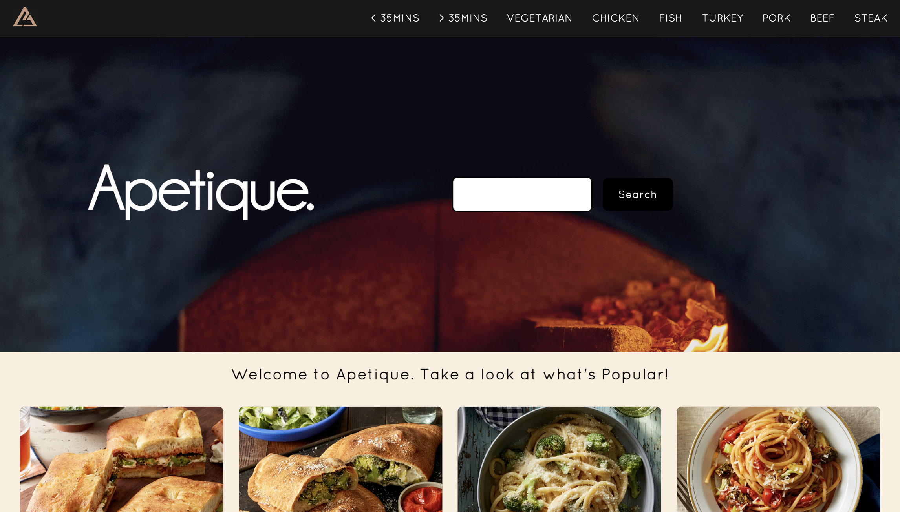
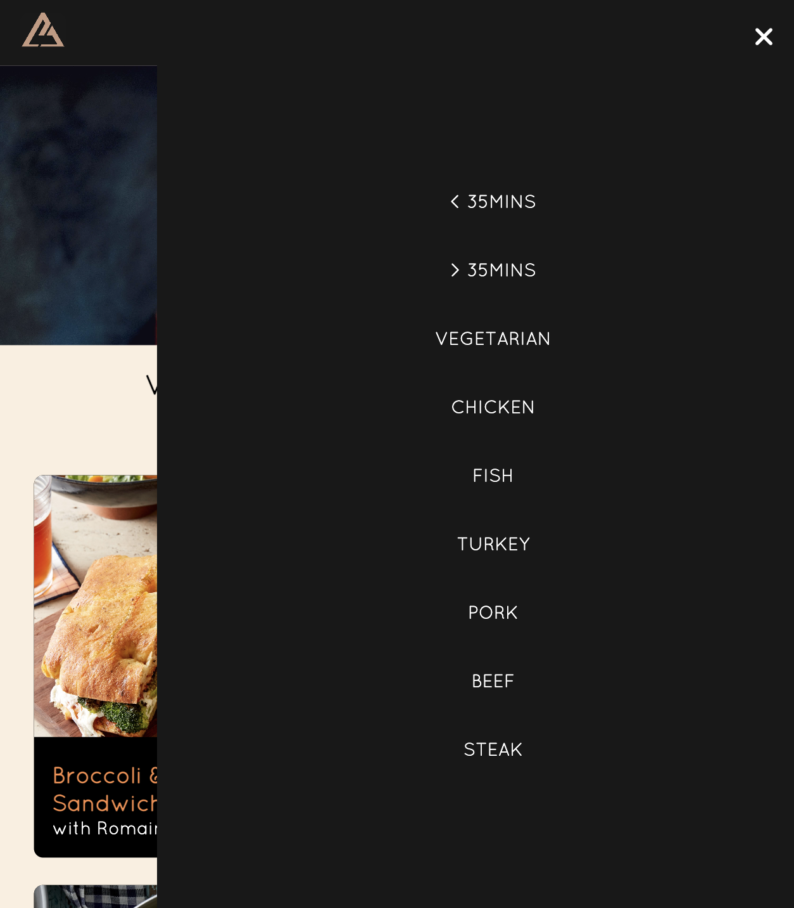

Apetique: A Culinary Exploration
- A Case Study by Sue Batham
Overview:
Embarking on a solo 11-week project, my mission with Apetique—a portmanteau with a French twist on 'Appétit'—was to architect a dynamic culinary exploration platform. This endeavor delved into full-stack development, intertwining PHP, MySQL, HTML, CSS, and Git to sculpt both front-end and back-end components. The focal point was a responsive web application, meticulously designed to facilitate user-friendly exploration of a vast recipe library. Notable features encompassed dynamic database interactions, adherence to responsive design principles, and the creation of an intuitive user interface. Apetique represents the project's commitment to satisfying culinary enthusiasts' appetites through a dynamic online platform for discovering diverse recipes. This project aimed not only to showcase technical prowess but also to deliver a seamless and engaging digital haven for culinary enthusiasts.
Context:
- Background:
The Apetique project started as a solo endeavor within a class project framework, blending technology and cooking passions. It sought to construct a captivating online platform dedicated to culinary exploration, offering a consolidated solution for recipe discovery. - Description:
Apetique became a comprehensive recipe discovery platform tailored for culinary enthusiasts. The solo nature facilitated hands-on development, allowing the incorporation of user-centric design principles and features aligned with the creator's vision for an engaging culinary hub. - Timeline:
The project unfolded over a concise 11-week timeline, requiring efficient planning from conceptualization to the final website deployment. - Purpose:
Apetique served to showcase web development proficiency and provide a practical solution for individuals seeking an intuitive platform for discovering, creating, and sharing recipes.
The Challenge:
Embarking on a solo 11-week project to create Apetique posed the challenge of crafting a feature-rich culinary platform within time and resource constraints. The absence of a team meant every aspect, from conceptualization to implementation, rested on the creator's shoulders.
Goals & Objectives:
- Efficient Time Management: Plan and execute the project within the 11-week timeframe.
- Feature Implementation: Develop features, including filters for recipe discovery, enhancing overall functionality.
- Solo Development: Navigate the entire development process independently, showcasing proficiency in both frontend and backend.
- User-Centric Design: Ensure the user interface is intuitive, visually appealing, and conducive to an enjoyable culinary exploration experience.
- Project Showcase: Demonstrate the ability to translate passion into a tangible and functional digital product.
The Process & Insights : Iterative Development Journey
The Apetique project unfolded as a deliberate and iterative 11-week journey, meticulously planned and executed to enhance user experience and platform functionality. The initial phase involved comprehensive conceptualization, defining project scope, objectives, and key features. A detailed timeline was crafted, accounting for the extended duration, and potential challenges were proactively identified with corresponding mitigation strategies. This set the foundation for a comprehensive full-stack development approach, leveraging PHP, MySQL, HTML, CSS, and Git to create a robust architecture. Dynamic database interactions and nuanced JavaScript elements were incorporated to ensure a living, evolving platform.
Responsive design integration was a pivotal focus, resulting in a meticulously designed web application that offered a seamless culinary exploration experience across various devices. The emphasis on user-centric design principles informed the crafting of an intuitive interface, and user feedback played a crucial role in refining features. The evolution of user-centric design was marked by continuous iterations, where fun button micro-interactions were introduced to make recipe exploration enjoyable. Clear navigation and concise content presentation were prioritized for an informed and excited user journey.
The insights garnered from the development process highlighted the significance of user feedback as a driving force behind Apetique's refinement. The delicate balance between technology and user experience emerged as a core theme, exemplified by the interactive user interface and engaging micro-interactions. The implementation of a user-friendly error messaging system transformed mistakes into opportunities for guidance, contributing to a pleasant user interaction. Filters, strategically placed for swift user access, became integral considerations for users seeking quick culinary delights, emphasizing the thoughtful fusion of technology and user preferences in the platform's design.
Filters for desktop:
Filters for Mobile & Tablet(portrait):
The Solution:
Embarking on an 11-week solo odyssey with Apetique went beyond conventional web development. This endeavor was a fusion of technology and culinary passion, resulting in a responsive web application that acted as a gateway to a diverse recipe library. Rooted in user-centric design, Apetique evolved through continuous enhancements, forming an engaging and refined platform. The interactive user interface served as an invitation, meticulously designed for intuitive and thrilling culinary exploration.
Distinguished by a sophisticated color palette and font selection, Apetique offered more than just code; it provided a visually appealing and minimalistic experience. The user-friendly error messaging system transformed mistakes into guiding moments. Strategic placement of filters, such as ">30 mins" and "< 30 mins," catered to users seeking swift access to culinary delights, adding an extra layer of functionality and convenience.
The Result:
Apetique surpassed the realm of a simple project, transforming into a story intricately blending technology and culinary creativity. Each code line turned into a meaningful note in a symphony of flavors. It wasn't merely a culinary platform; it stood as a heartfelt invitation for users to embark on profound gastronomic adventures, guided by technology and ignited by a profound passion. The invaluable feedback from both my professor and peers played a pivotal role, profoundly shaping the project's result and infusing it with a depth that echoes in its present manifestation.